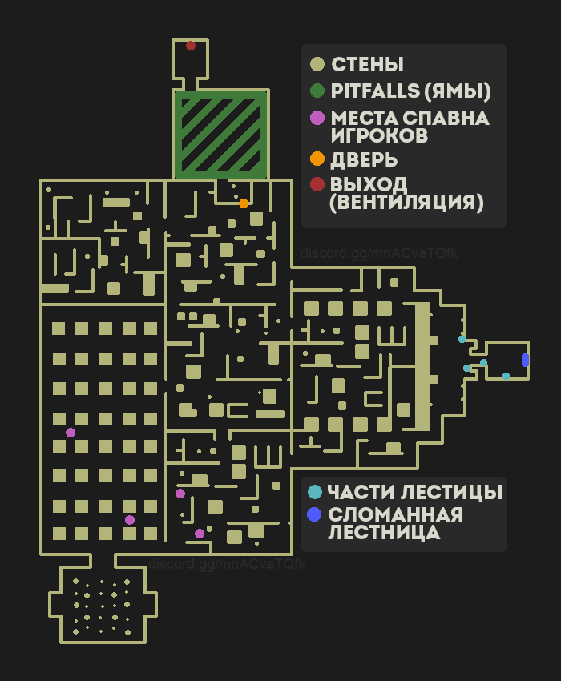

Введение
Добро пожаловать на наш гайд по легитному прохождению кошмарной сложности (вчетвером) в игре Escape the Backrooms. Прежде, чем проходить кошмарную сложность, вам нужно знать все уровни и иметь опыт игры. Также вам нужно уметь делать некоторые фишки, которые мы распищем ниже.
Фишки, которые должен знать каждый
Также не забывайте следовать нижеперечисленным правилам:
- Постоянно поддерживайте уровень здравомыслия.
- Следуйте и обходите места, которые мы опишем ниже.
Баннихоп
С помощью данного приёма вы можете передвигаться без потери выносливости. Для этого вам нужно:
- Зажмите W, чтобы бежать вперёд и не отпускайте данную клавишу
- И по очереди нажимайте на клавиши: Зажмите Shift => Зажмите Space => Отожмите Shift => Отожмите Space
- Старайтесь как можно быстрее отпускать клавишу Shift после прыжка, так у вас будет меньше шансов потерять выносливость
- Попробуйте баннихоп в одиночной игре, чтобы вы автоматически передвигались данным способом
Поздравляем! Вы теперь можете передвигаться по уровням почти без потери выносливости!
Уровень 0
Четыре игрока появляются на указаных точках в карте, два игрока, которые заспавнились ближе к сломанной лестнице - идут собирать кусочки и забирают ключ (ключ можно забрать, собрав кусочки лестницы и кликнув F по сломанной лестнице). Остальные два игрока должны двигаться к двери. Если кто-то взял ключ от двери, тогда кто угодно может открыть дверь. Забрав ключ, все должны двигаться к питфоллсам (ямам), и пройти до вентиляции.
Дальше все четыре игрока должны пройти ямы. Туториал, как пройти это:
Если кто-то упал, то можно всегда сбросить им верёвку. Если так случилось, что упали все, то найдите на нижнем этаже на стене стрелку, и следуйте за ней, там тоже есть выход.